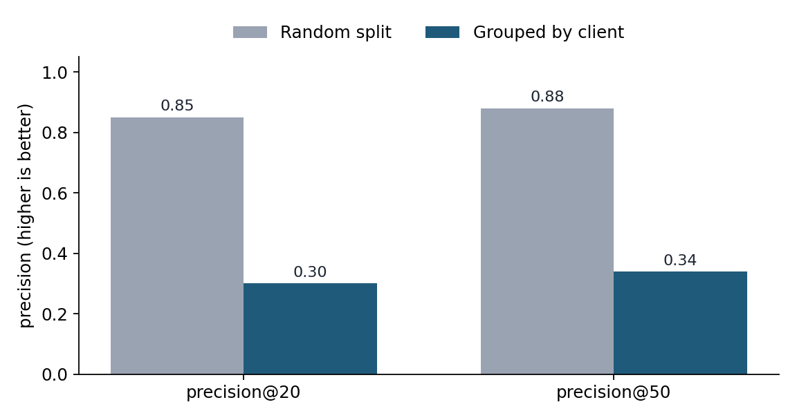
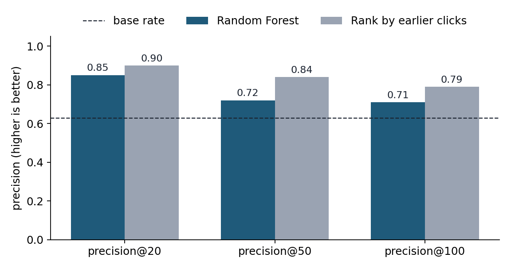
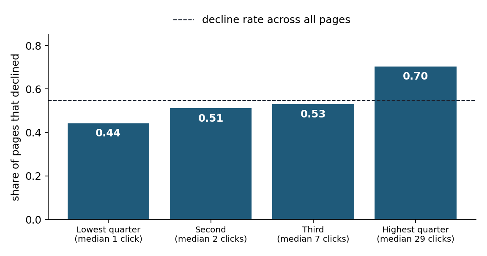

Which pages will lose search clicks next? What honest validation changed
By Bandaru Rekha Sree, October 2026
Lane: Refresh / Content Opportunity Scoring
Abstract
Can a model rank which web pages will lose search clicks better than a simple rule? We trained a Random Forest on earlier-window metrics from 8,462 content pages (26 clients) and tested it on 3,568 pages from 7 clients it had never seen. Among pages with meaningful traffic, the model's AUC was 0.542, below the 0.608 of simply ranking by earlier clicks. A first version looked far stronger (precision@20 of 0.850 under a random split, 0.300 under a grouped split) because its features overlapped the label window and its base rate counted pages that could not decline. We offer the result as a human-reviewed triage aid, and as an example of what honest validation changes.
1. Introduction
An editor with an afternoon can review about 20 pages out of thousands. Which 20?
This paper asks whether a model can help with that choice. The decision is which pages to look at first. The person acting is a content or SEO editor. A wrong call costs review time, or a bad edit to a page that already earns clicks.
We define a decline as fewer clicks in the last 30 days than in the 30 days before. A simple rule is the obvious competitor: rank pages by how many clicks they had before. If a model cannot beat that, it has not earned its place.
2. Data
The data is the 30,000-row starter table from the FlyRank ML Internship (content_refresh_anonymized.csv), a pseudonymized export from 32 clients. It is the only table used. One row is one content page, with trailing 90-day, last-30-day and previous-30-day metrics.
We kept only pages with at least one click in the earlier 30 days, because a page with zero clicks in both windows cannot decline. That leaves 8,462 pages from 26 clients.
We excluded these fields on purpose:
ctr, engagement_rate, scroll_rate, avg_position and position_tier. The data dictionary defines them over a trailing 90 days, which contains the last 30 days, the label window.
days_since_last_update. An update in the last 30 days falls inside the label window.
trend_pct and trend_direction. They are label-related by construction.
Client and content IDs. Used for grouping only, never as features.
No client names, domains, URLs or private queries appear in this paper.
3. Methodology
Label. A page is "declined" if clicks in the last 30 days are below clicks in the previous 30 days.
Features, earlier window only. Clicks, impressions and sessions in the previous 30 days; the previous 30-day click-through rate; clicks and impressions from days 61 to 90 back; search volume, competition, cost per click, word count and content age.
Split. Grouped by client, 75% train and 25% test (19 and 7 clients), random seed 42. Grouping means the model is always tested on clients it has not seen. A random split lets it memorize each client's character.
Model and baselines. A Random Forest with 200 trees. Two baselines: the base rate, and ranking pages by clicks in the previous 30 days.
Metrics. Precision@K with the base rate beside it, and AUC.
Fixed cutoffs. "High risk" means a score at or above the 80th percentile of out-of-fold scores on training data (0.705). "Meaningful traffic" means more than 4 earlier clicks, the training median. Neither cutoff was chosen from test data.
Leakage checks. We checked that every feature predates the label window, that no product flags or label-derived columns were used, and that the split was grouped. We also trained with and without the top feature. That last test passed in our first version, and it still missed the problem described in section 4.
4. Results
What the first version got wrong
Our first model used the 90-day rate columns and scored every page, including those that could not decline. It looked strong under a random split and much weaker under a grouped split.

Takeaway. The same first model scored 0.85 under a random split and 0.30 under a grouped split. A random split can overstate skill by a wide margin.
Two problems explain much of that gap. The 90-day features contain the last 30 days, which is the label window. And 47.6% of the first test set had zero clicks in both windows, so those pages could never count as declined. Among pages with any clicks (base rate 0.490), precision@100 was 0.480, at the base rate.
The rebuilt model
The rebuilt model uses pages that could decline, earlier-window features only, and a grouped split. The test set has 3,568 pages from 7 clients, with a base decline rate of 0.547.
Among pages with meaningful traffic (1,633 pages, base rate 0.627), the model's AUC was 0.542 against 0.608 for ranking by earlier clicks. The AUC difference (model minus earlier clicks) had a 90% range of -0.098 to -0.038. That range comes from resampling pages, not clients, so it understates the real uncertainty. Flagged pages declined at 0.659 (n=208), against 0.622 (n=1,425) for unflagged pages.

Takeaway. Where pages have meaningful traffic, the model did not rank declines better than a simple rule.
Pages with more earlier clicks declined more often: 0.443, 0.511, 0.530 and 0.704 from the lowest to the highest quarter, with 892 pages in each. This fits regression to the mean. We did not test that.

Takeaway. The pages with the most clicks to lose were also the ones most likely to fall.
Where the model does separate pages
Queue actions on the held-out pages
Action
Reason code
Pages
Decline rate
Average clicks lost
review_first
meaningful_traffic_high_risk
208
0.659
16.55
monitor
small_traffic_high_risk
410
0.741
1.03
routine_check
meaningful_traffic_low_risk
1,425
0.622
8.04
no_action
small_traffic_low_risk
1,525
0.409
0.61
A reason code says why a page got its action: whether it had meaningful traffic (more than 4 earlier clicks) and whether the model score put it in the top fifth. The flag separates pages mostly among small-traffic ones (0.741 against 0.409). A decline there costs about one click.
Staleness and decline
Decline rate by days since last update was 0.574 for 0 to 30 days (5,797 pages) and 0.527 for 91 to 180 days (2,619 pages). The 31 to 90 and 181+ groups had only 35 and 11 pages and cannot support a conclusion. We observed no steady rise in declines with staleness.
5. Limitations and honest framing
One snapshot, one split, 7 held-out clients. A different split could move these numbers.
The label is a 30-day click drop. Noise and seasonality can produce it.
Only pages with earlier clicks are scored. Pages with none are out of scope.
The rise in decline rate with earlier clicks is consistent with regression to the mean, which we did not test.
Nothing here shows that refreshing a page reverses a decline. That needs a controlled experiment.
The decay finding is descriptive. A recent update falls inside the label window.
A recommendation is wrong if the drop is tracking noise, seasonality or a one-off spike in the earlier window, or if the page is meant to rank low. A person checks this before acting.
We found and corrected the overlapping-window and base-rate problems after our first results. Earlier versions of this work contained them.
6. Ranked recommendations
Review pages with the most earlier clicks first, after confirming the drop is real. Ranking by earlier clicks matched or beat the model among pages with meaningful traffic.
Use the model flag as a secondary note, not a ranker, for high-traffic pages. Flagged and unflagged pages declined at 0.659 and 0.622.
Treat small-traffic flags as monitor-only. Those declines cost about one click.
Do not automate edits, deletions or client promises. No test here shows that a refresh recovers traffic.
Run a controlled refresh test before claiming any effect. Compare refreshed pages against matched untouched pages.
Re-test any new model against ranking by earlier clicks on a fresh month and on new clients.
Notebooks, in work/notebooks/: w05_model.ipynb (first model), w06_validation_audit.ipynb (random versus grouped split), w07_action_playbook.ipynb (rebuilt model, queue, triggers).
Seed 42. Random Forest with 200 trees. Grouped split with GroupShuffleSplit, 25% test.
Run in Google Colab with scikit-learn. Tree-ensemble results can shift a few points between library versions.
Everything reruns from the repository alone: the data file is in data/raw/ and each notebook clones the repo. The ranked queue is regenerated by the notebook. Metric receipts are in work/outputs/ml10_metrics.json.